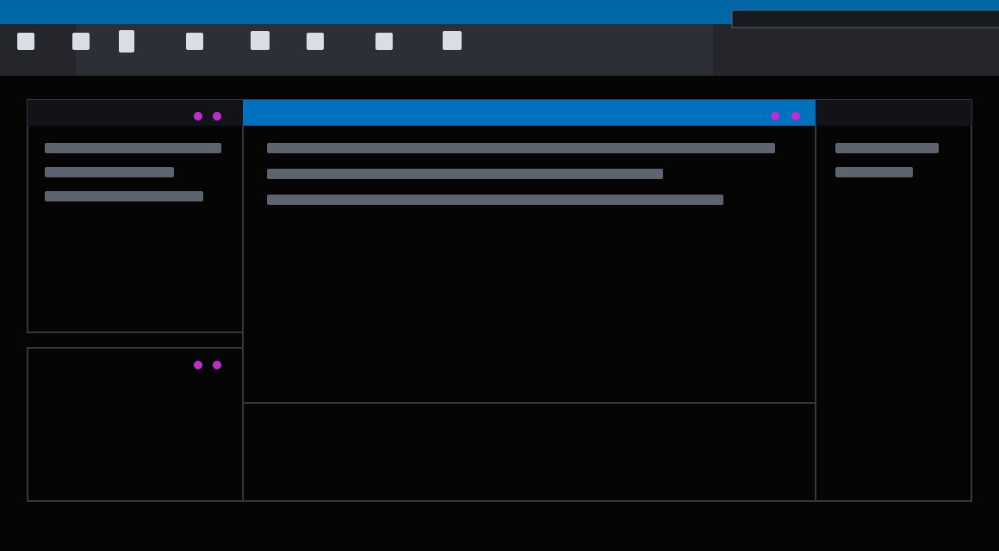

ROLE
Product design, interaction patterns, prototyping.
%selected MATLAB work%
A placeholder case study for a modern MATLAB layout workflow. Replace this with the final Figma copy, process images, and measured outcomes when they are ready.

Product design, interaction patterns, prototyping.
Helping users create flexible interface layouts with less friction.
Content placeholder, structure ready for final assets.